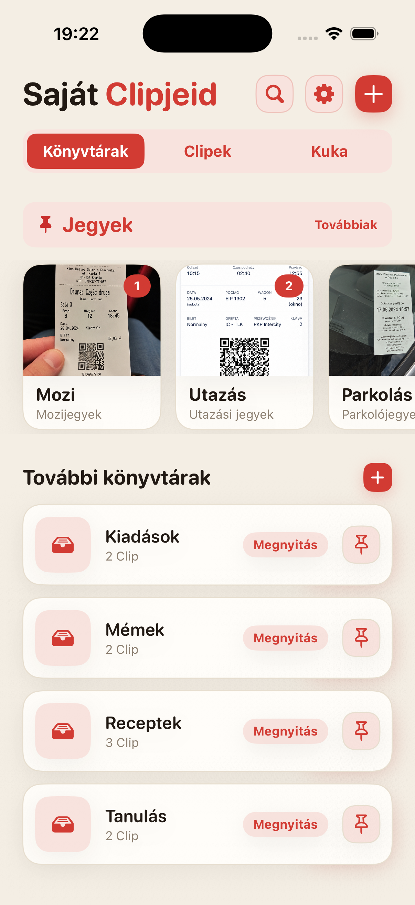
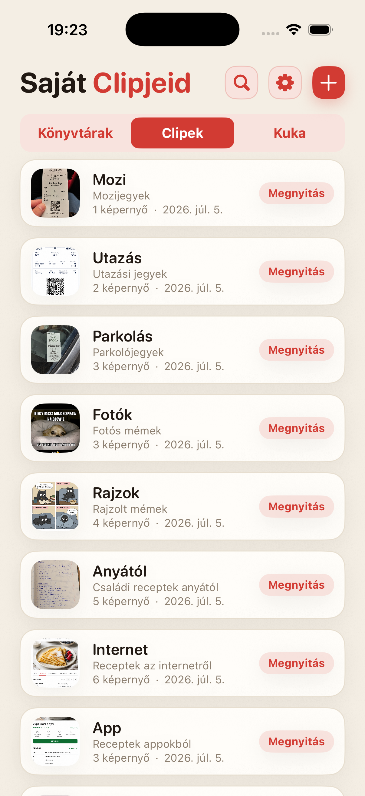
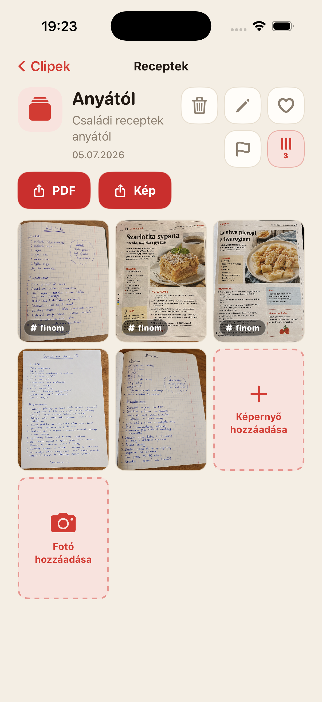
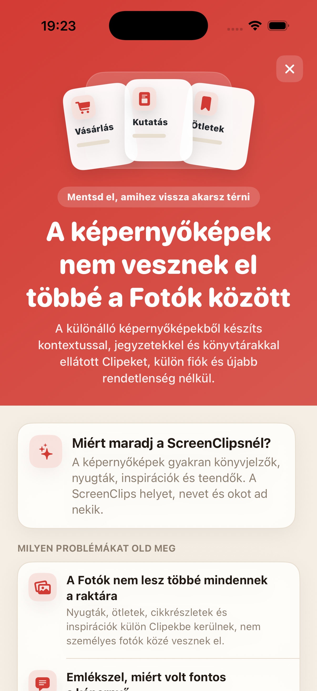

A képernyőfotók eltűnnek a tömegben
Elmentesz valami fontosat, egy héttel később pedig úgy pörgeted a galériát, mintha bizonyítékot keresnél.
Alakítsd a szétszórt képernyőfotókat névvel, jegyzettel és saját könyvtárral ellátott Clipekké. Nincs fiók, nincs felhő, nincs végtelen keresgélés a galériában.

Nyugták, receptek, jegyek, ötletek és cikkrészletek keverednek szelfikkel, mémekkel és véletlen plafonfotókkal. Felépítettük a felhőt, aztán mégis elveszítettük a hoteles címet tartalmazó képernyőfotót.
Elmentesz valami fontosat, egy héttel később pedig úgy pörgeted a galériát, mintha bizonyítékot keresnél.
Önmagában a kép gyakran kevés. A ScreenClipsben nevet és jegyzetet is adhatsz hozzá.
Utazás, munka, vásárlás és tanulás külön helyet érdemel, nem egy végtelen kupacot a Fotókban.
Válaszd szét a témákat: receptek, nyugták, jegyek, kutatás, tanulás vagy bármi más, amit nem akarsz elfelejteni.
A Clip egy kis csomag egy konkrét dolog köré. Van neve, leírása és saját képernyőfotói.
Nyiss meg egy könyvtárat, válassz egy Clipet, és minden szükséges anyag együtt lesz.

A ScreenClips nem próbál helyetted találgatni. Egyszerű keretet ad: egy könyvtár a témának, egy Clip a konkrét dolognak, benne képernyőfotókkal vagy fotókkal.
Gyűjtsd az anyagokat Clipekbe, és bővítsd őket, ahogy a téma növekszik.
Alakíts egy Clipet olvasható fájllá, ha el akarod küldeni vagy az appon kívül is megőriznéd.
Kedvencek, jelölések és rend ott, ahol korábban csak végtelen görgetés volt.

A ScreenClips helyben működik. A rendszerezéshez nincs szükség fiókra, és nem kell átadnod a nyugtáidat, jegyzeteidet és terveidet egy újabb szolgáltatásnak, amely „jobb élményt” ígér.
A Premium nem bonyolítja túl az appot. Több helyet ad könyvtáraknak, Clipeknek és képernyőfotóknak. Az ár az App Store-ban látható.
Letöltés azApp Store-ból
Nem. Ha eltávolítasz egy elemet egy Clipből, az eredeti kép nem törlődik a Fotókból.
Igen. A ScreenClips helyi rendszerezőként működik az iPhone-odon.
Nem. A ScreenClipsnek nincs szüksége fiókra a Clipek rendszerezéséhez.
Igen. Képernyőfotókat és fotókat is hozzáadhatsz, ha egy Cliphez tartoznak.
A ScreenClips rendszerezi azokat a dolgokat, amelyeket „későbbre” mentesz. Ezúttal a később tényleg megtalálható.
Letöltés azApp Store-ból